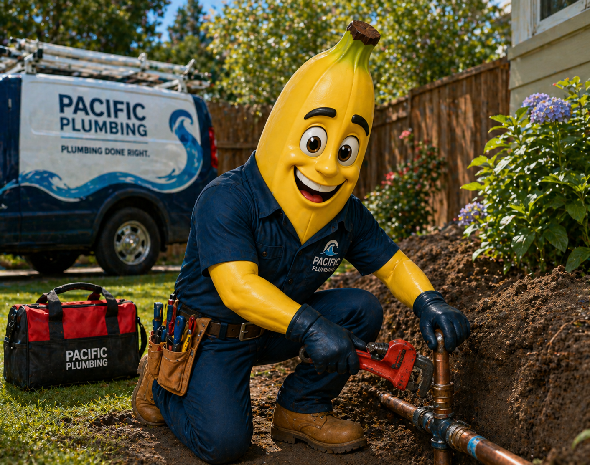

Signs of a possible water line problem
- Wet spots in the yard or around the foundation
- A sudden increase in your water bill
- Reduced water pressure throughout the home
- Sounds of running water when fixtures are off
water line repair Tulsa
A water line issue can show up as a soggy yard, rising water bill, weak pressure, or water where it does not belong. Pacific Plumbing helps locate the problem and explain the best repair path.

Meter movement when fixtures are off, soggy ground, and pressure changes can all point to a leak.
It can, depending on location and duration. Prompt diagnosis helps reduce risk.
No. Some can be repaired, while aging or repeatedly failing lines may justify replacement.
Ready when you are
Call now or request a service window. Pacific Plumbing will help you understand the problem and choose the right fix.